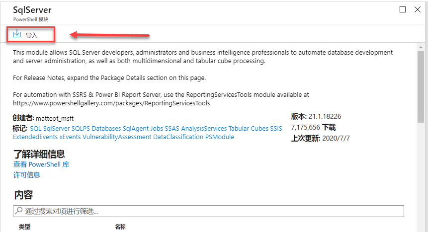
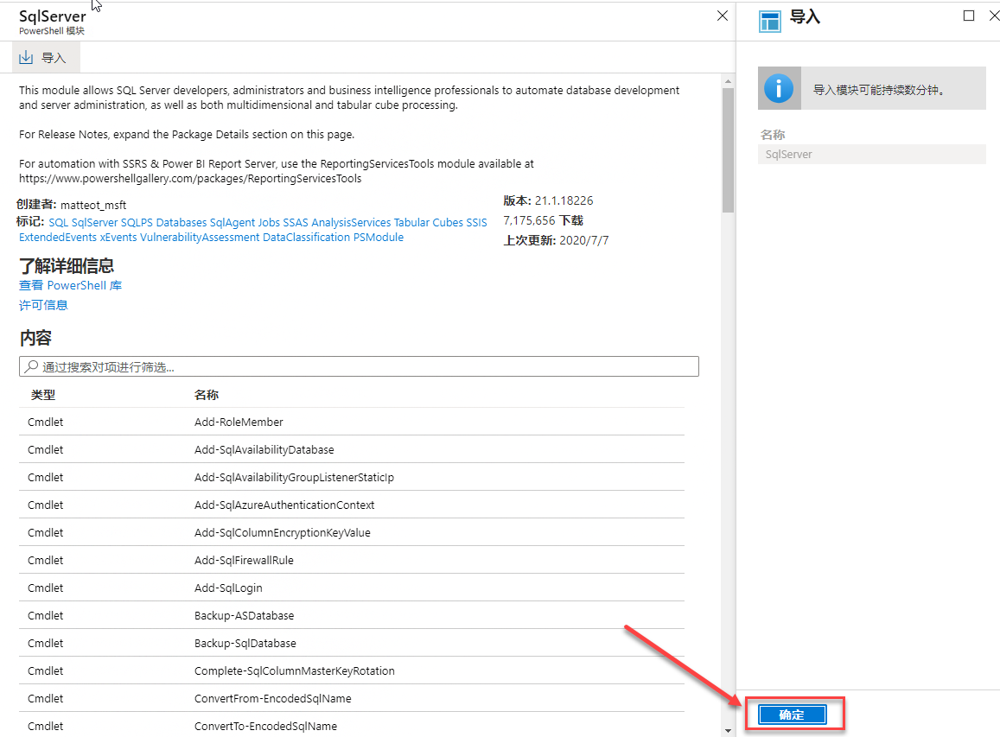

实验室 6 – 自动化资源
预计用时： 90 分钟
可以通过访问 Azure 门户从 Web 浏览器执行此实验室。
注意：需要将 Microsoft.Insights 模块添加到你的订阅中，才能完成此实验室。你可以通过完成以下步骤进行注册。
在 Azure 门户中，单击门户右上角的 Cloud Shell 图标。
屏幕底部将打开一个 Shell。单击 PowerShell，如下所示。
系统可能会提示你创建存储帐户。单击“创建存储”。
PowerShell 窗口打开后，粘贴以下命令：
register-AzResourceProvider -ProviderNamespace Microsoft.Insights
实验室文件： 此实验室的文件位于 D:\LabFiles\Automate Resources 文件夹中。
实验室概述
学生将利用从课程中获得的信息，在 AdventureWorks 中配置并随后实现自动化流程。
实验室目标
完成本实验室后，你将能够：
-
从 GitHub 快速启动模板部署 Azure 资源
-
配置与性能指标相关的通知
-
部署 Azure 自动化 Runbook 以在 Azure SQL 数据库中执行索引维护
应用室场景
你已被聘为高级数据工程师，以帮助自动化数据库管理的日常操作。这种自动化功能有助于确保 AdventureWorks 的数据库继续以最高性能运行，并提供基于某些条件发出警报的方法。AdventureWorks 在基础结构即服务和平台即服务产品中都利用了 SQL Server。
练习 1：部署 Azure 快速启动模板
预计用时：30 分钟
个人练习
本练习的主要任务如下：
- 从 GitHub 快速启动模板部署 Azure 资源
任务：通过模板部署 Azure SQL 数据库
-
使用 Web 浏览器中导航到以下 GitHub。

单击 azuredeploy.json，然后查看该文件。
-
导航回以上链接（单击浏览器左上角的返回箭头），然后单击“部署到 Azure”按钮。系统可能会提示你登录到 Azure 门户。使用提供的凭据登录。
-
你将会看到如下所示的屏幕。为了部署此模板，你需要完成空白字段。
在“资源组”字段中单击“新建”，然后键入 “DP300-Lab06”，然后单击“确认”。将区域更改为你附近的区域。在剩余字段中使用以下值：
- SQL 管理员登录名： labadmin
- SQL 管理员登录密码： Azur3Pa$$
- 透明数据加密： 启用
- 位置： [resourceGroup().location]
-
单击“查看 + 创建”，然后单击“创建”。你的部署将开始。你可以通过单击铃声（在下面的屏幕截图中突出显示），然后单击“通知”窗格中的“正在进行部署”链接来跟踪部署的状态。
部署大约需要 5-10 分钟。如果已单击上面的链接，则可以跟踪你的部署。
-
完成后，屏幕将更新，会显示指向新创建的资源的链接。
单击“转到资源”链接。你将被带到刚刚创建的部署的 Azure 资源组。你应该会在资源组中看到一个 SQL 服务器和一个 SQL 数据库。 记下你的 SQL Server 的名称，因为你将在下一个练习中使用它。
练习 2：配置基于性能指标的警报
预计用时：30 分钟
个人练习
本次练习的主要任务如下：
- 配置与性能指标相关的通知
任务：当 CPU 超过 80％ 的平均值时创建警报。
-
导航到 portal.azure.com（如果你尚未到达此门户）。你可能需要再次登录。在 Azure 门户顶部的搜索栏中，键入“SQL”，然后单击 SQL 数据库。单击数据库名称： sample-db-with-tde。
-
在 sample-db-with-tde 数据库的主边栏选项卡上，向下导航至监视部分
-
单击“警报”，如下所示。
-
你将看到以下屏幕。单击“+ 新建预警规则”。
-
你会注意到，已经用你创建的 SQL Server 填充了资源。在“条件”部分下，单击“添加条件”。
-
在“配置信号逻辑”浮出控件菜单中，选择“CPU 百分比”。
-
提供阈值 80。点击“完成”。
-
在“操作组”部分下，单击“添加操作组”
-
在“操作组”浮出控件中，单击“+ 创建操作组”。
在“创建操作组”屏幕中，键入：
- 操作组名称：emailgroup
- 显示名称：emailgroup
选择 “下一步: 通知 >”。
-
然后，单击“通知类型”下拉列表，选择“电子邮件/短信/推送/语音”并输入名称 DemoLab。
-
在右侧的浮出控件屏幕（在上图中显示）中，单击电子邮件旁边的复选框，输入电子邮件地址，然后单击“确定”。然后单击“查看 + 创建”按钮，然后在“创建操作组”屏幕上单击“创建”。
在“创建预警规则”屏幕上，添加名为 DemoAlert 的预警规则，然后单击“创建预警规则”，如下所示。
练习 3：部署自动化 Runbook
预计用时：30 分钟
个人练习
本次练习的主要任务如下：
-
部署维护任务脚本。
-
部署 Azure 自动化 Runbook 以在 Azure SQL 数据库中执行索引维护
任务：部署自动化 Runbook 以在 Azure SQL 数据库中重建索引。
-
在实验室虚拟机中（如果没有在 Azure 门户中），启动浏览器会话并导航到 https://portal.azure.com.提供适当的凭据。

-
在 Azure 门户的搜索栏中，键入“自动化”，然后单击“自动化帐户”
单击门户中的“+ 创建”按钮。
-
创建自动化帐户
名称： 中的机器人 DP300Lab06
资源组：使用你之前在此实验室中创建的资源组。DP300-Lab06
位置：使用在实验室 2 中创建 Azure SQL 服务器的区域
单击 “创建”。你的自动化帐户应在 1-3 分钟内部署。
-
导航到 AdaptativeIndexDefragmentation 的 github 页面。 https://github.com/microsoft/tigertoolbox/blob/master/AdaptiveIndexDefrag/usp_AdaptiveIndexDefrag.sql

单击“原始”。这将以你可以复制的格式提供代码。选择所有文本 (Ctrl-A) 并将其复制到剪贴板 (Crtl-C)。
-
在 Azure 门户中，导航回到你的数据库，然后单击“查询编辑器”，如下所示。
-
系统将提示你输入凭据以登录到数据库。使用你在练习 1 中创建的凭据。
登录名： labadmin
密码： Azur3Pa$$尝试登录时，你可能会收到有关白名单 IP 的错误。单击错误消息末尾的蓝色“白名单 IP”链接。这样做会将服务器防火墙规则更新为允许访问。
-
看到成功消息后，再次单击日志屏幕中的“确定”。此时，你应会获得对 SQL 数据库查询编辑器的访问权限。
-
在查询编辑器中，将之前在此任务中从 GitHub 复制的文本粘贴到“查询 1”窗格中。删除脚本第 5 行和第 6 行上的 USE msdb 和 GO 语句。
-
单击“运行”。查询应生成以下消息：
-
在 Azure 门户的“搜索”字段中，键入“自动化”。单击“自动化帐户”。
找到已在你的订阅中创建的自动化帐户，然后单击它。
-
在“自动化”边栏选项卡的“共享资源”部分，选择“模块”。
-
单击“浏览库”
-
在库中搜索 sqlserver
-
单击 SqlServer 文本，这将直接转到下一个屏幕。单击“导入”。 
-
单击屏幕右下角的“确定”以导入模块。这会将 PowerShell 模块导入你的自动化帐户。 
-
你将需要创建一个凭据来安全登录数据库。从“自动化帐户”边栏选项卡中，导航到“共享资源”部分，然后单击“凭据”。
- 单击“+ 添加凭据”，然后创建一个凭据，如下所示：
- 名称：SQLUser
- 用户名：labadmin
- 密码：Azur3Pa$$
单击“创建”。
-
滚动到“自动化帐户”边栏选项卡的“流程自动化”部分，然后依次单击“Runbook”和“+ 创建 Runbook”。
- 在“创建 runbook”面板中，输入：
- 名称：IndexMaintenance
- Runbook 类型：Powershell
- 描述：可以为自己的选择提供简短描述。 单击“创建”。
创建 Runbook 后，该过程应让你直接进入 Runbook。
-
使用 Windows 资源管理器导航到文件夹 D:\LabFIles\Automate Resources。右键单击 DP300-Lab-Module-6.ps1 文件，然后单击“编辑”。PowerShell IDE 将打开。

-
编辑 $AzureSQLServerName 变量以反映你的 Azure SQL 服务器的名称。你可以从 Azure SQL 数据库的概述屏幕中获取此值，如下所示。
-
复制服务器的名称，包括 .database.windows.net 域后缀。
-
在文件的第 1 行上，粘贴你的服务器名称。选择所有文本并将其复制到剪贴板。
-
导航回到自动化 Runbook，并粘贴从 PowerShell IDE 复制的 PowerShell 代码。单击“保存”，然后单击“发布”。
-
如果系统提示你覆盖任何以前发布的版本，请单击“是”。
-
接下来，你将需要计划定期执行 Runbook。单击左侧导航菜单中的“计划”。然后单击顶部的“+ 添加计划”。
-
单击“将计划链接到你的 Runbook”。
-
选择“+ 添加计划”。
-
如果需要，提供描述性的计划名称和描述。
-
指定开始时间为第二天凌晨 4:00，并且采用东部时区。配置重复发生次数为每天一次。不要设置到期时间。
-
单击“创建”。单击“确定”。
-
现在，计划已链接到 Runbook。